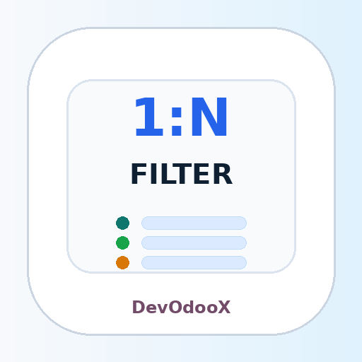
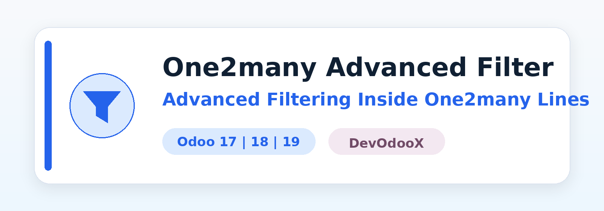
One2many Advanced Filter
Advanced Filtering Inside One2many Lines
Add powerful search and filtering directly inside one2many list views such as invoice lines, sale order lines, purchase order lines, and other embedded Odoo lines.
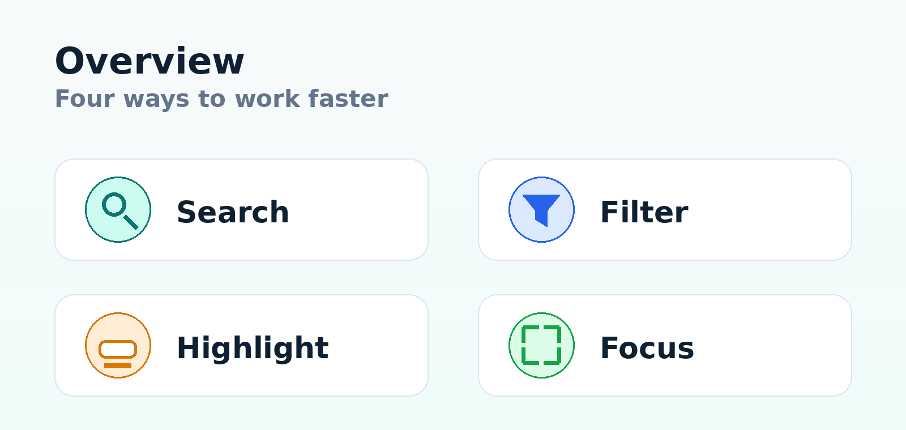
This module improves the user experience when working with large one2many line tables by allowing users to filter, search, highlight, and focus only on relevant rows without leaving the parent form.
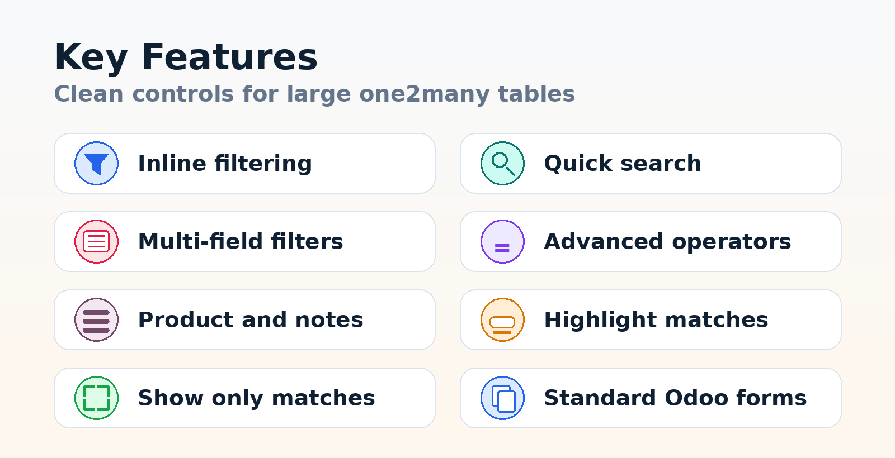
Filter one2many lines directly from the parent form without opening a wizard or leaving the document.
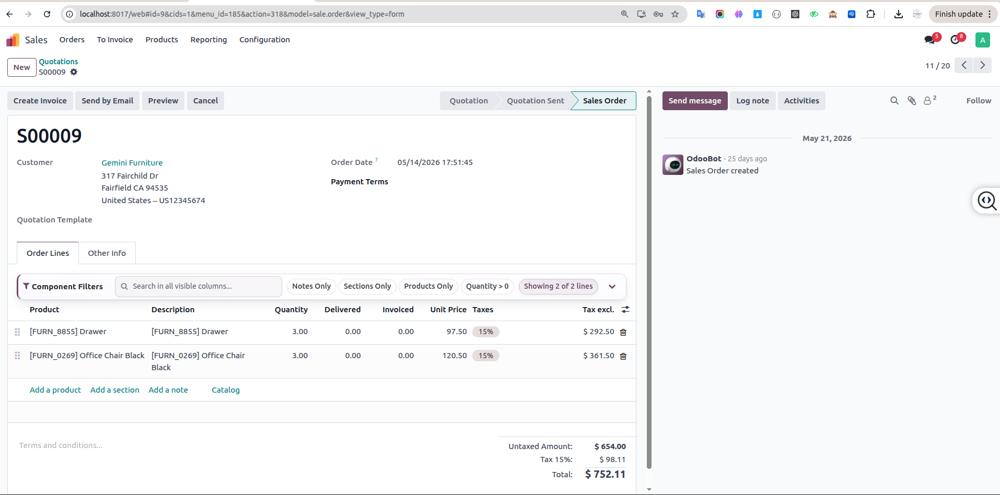
Quickly search across line content and instantly locate matching rows.
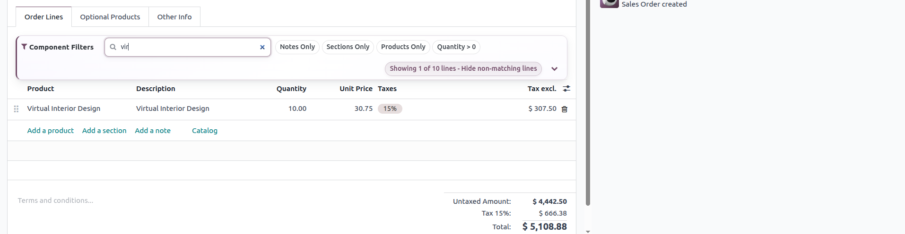
Select fields and apply filters based on the line data available in the one2many table.
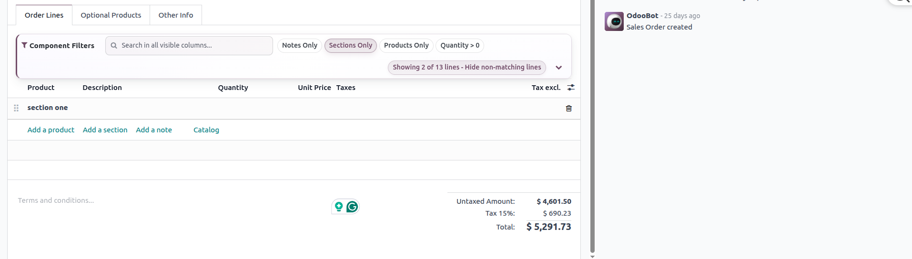
Use operators such as contains, equals, not equals, greater than, less than, starts with, and more.
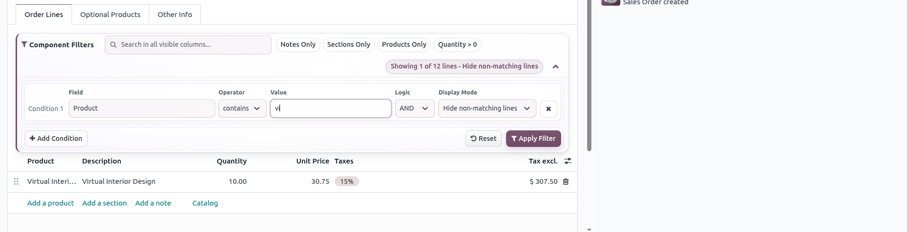
Keep all lines visible while highlighting only the rows that match the current filter.
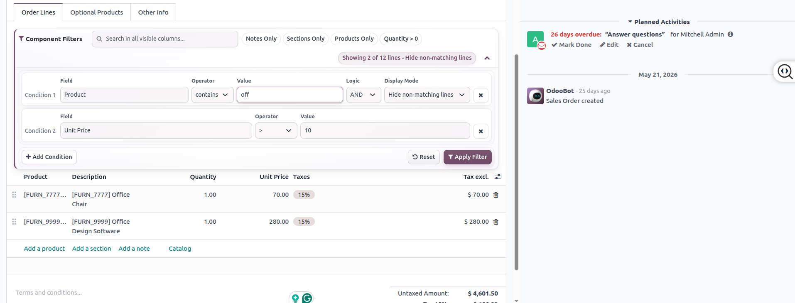
Focus on matching records only by hiding unrelated one2many lines temporarily.
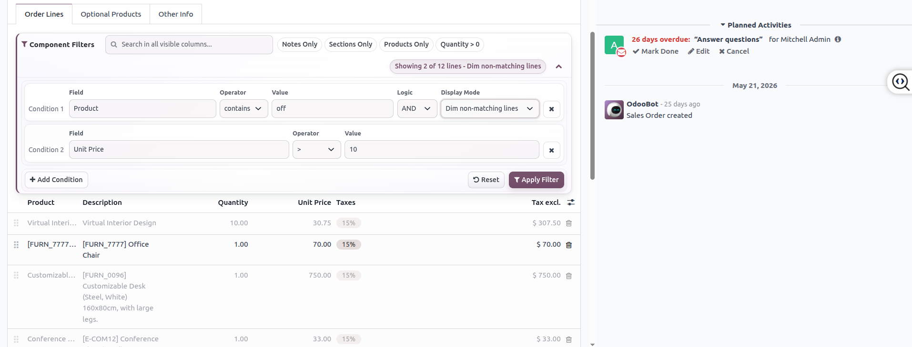
A clean and compact filter area that saves space and keeps the form comfortable to use.
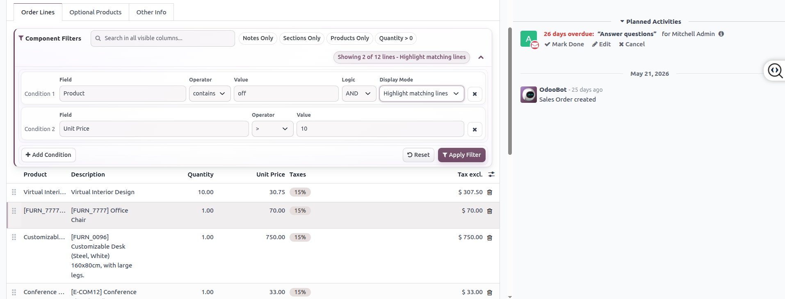
Designed to work with common Odoo one2many lines such as sales, invoices, purchases, and other custom documents.
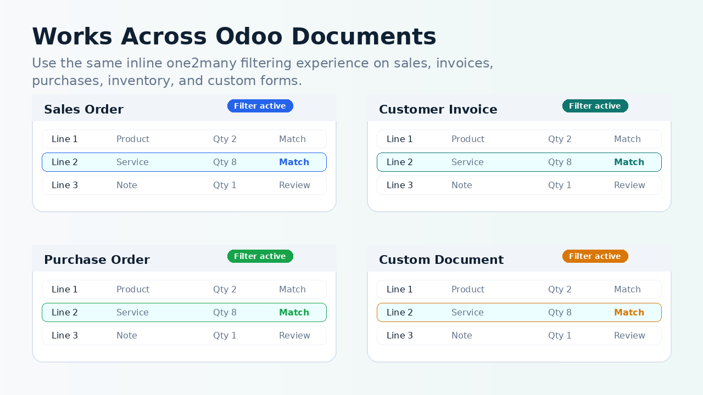
Watch the module in action.
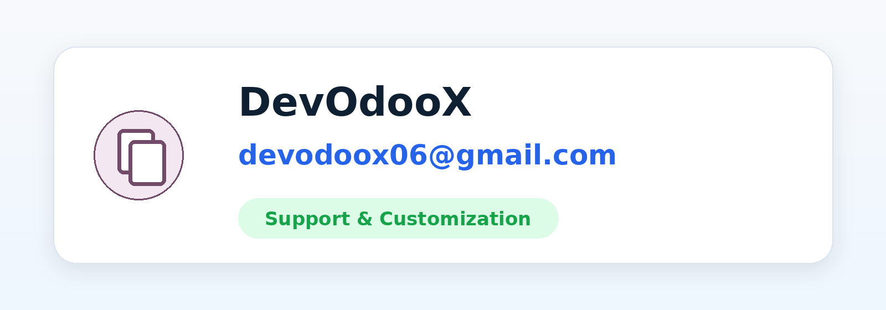